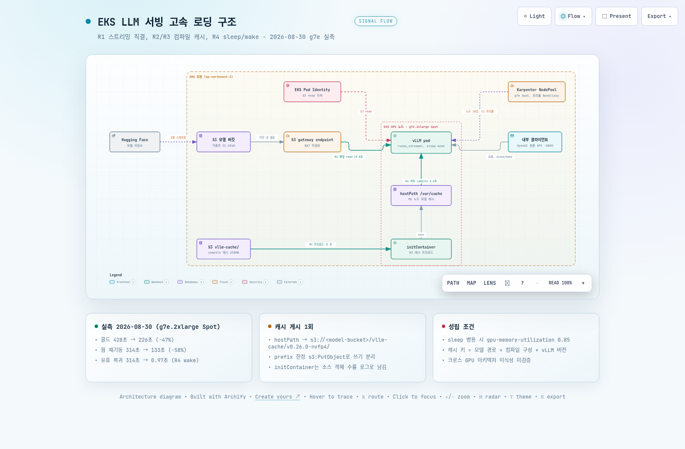

01사실 관계 - 실측 환경과 결과 총괄
이 섹션은 무엇을 어디서 측정했는지와 최종 수치만 다룹니다. 해석과 권고는 04 섹션부터 나옵니다. 실측은 2026-08-30 하루 동안 같은 클러스터, 같은 인스턴스 계열에서 진행했습니다.
1.1 실측 환경
이 표에서 볼 것은 두 가지입니다. 노드가 Spot 단일 계열이라는 점과, 기동 시간의 정의가 pod 생성 시점부터 readinessProbe(컨테이너가 트래픽을 받을 준비가 됐는지 kubelet이 주기적으로 확인하는 검사) 첫 통과까지라는 점입니다. probe 주기가 10초라서 모든 총 기동 값은 10초 단위로 끊겨 기록되고, 최대 10초의 오차가 들어 있습니다.
| 항목 | 값 |
|---|---|
| 리전 / 클러스터 | ap-northeast-2, Amazon EKS 1.36, Karpenter v1.14 |
| GPU 노드 | g7e.2xlarge Spot (NVIDIA RTX PRO 6000 Blackwell 96GB, 1 GPU). 전 측정 동일 계열, 웜 측정은 동일 노드 |
| 서빙 | vLLM v0.26.0 (vllm/vllm-openai:v0.26.0, 이미지 8.9GB) |
| 모델 | Gemma-4-31B-IT NVFP4, safetensors, 로드 실측 31.22GiB. 리전 내 S3 버킷에 사전 스테이징 |
| 모델 접근 자격 | EKS Pod Identity로 S3 read 권한을 pod의 service account에 연결 |
| 측정 도구 | pod conditions와 events로 k8s 구간을, vLLM 로그 마커로 가중치와 컴파일 구간을 분해하는 셸 하니스 |
| 총 기동 정의 | pod 생성 → readinessProbe(/health) 첫 통과. probe 주기 10초 단위 오차 포함 |
콜드는 GPU 노드가 없는 상태에서 Karpenter 프로비저닝부터 시작하는 기동이고, 웜은 이미지와 캐시를 가진 같은 노드에서 pod만 재생성하는 기동입니다. 캐시류 레버는 캐시를 채우는 적재 회차와 캐시를 사용하는 히트 회차를 구분해 기록했습니다. 적재 회차는 이득이 없는 것이 정상이므로, 개선 수치는 항상 히트 회차 기준입니다.
1.2 결과 총괄
세 가지 운영 시나리오에서 얼마나 줄었는지가 이 표의 답입니다. 콜드 행의 226초에는 이미지 프리풀(C1)의 부분 효과 약 32초가 포함되어 있고, 웜과 유휴 복귀 행은 R1~R4만으로 나온 값입니다.
| 시나리오 | 기준 구성 | R1+R2+R4 (노드 로컬 캐시) | R3 + C1 프리풀 | 개선 |
|---|---|---|---|---|
| 콜드 (노드 프로비저닝부터) | 428초 (7분 8초) | 306초 (R1+R2, 캐시 미스) | 226초 (3분 46초, R3 히트) | -47% |
| 웜 재기동 (같은 노드) | 314초 | 133초 (2분 13초) | 133초 | -58% |
| 유휴 → 서빙 복귀 | 314초 (재기동) | 0.97초 (R4 wake) | 0.97초 | 약 320배 |
구간별로 귀속하면 가중치 로드는 127.6초에서 19.8초로 6.5배 빨라졌고(R1), 컴파일을 포함한 엔진 초기화는 캐시 히트 시 94.0초에서 29.6초로 약 68% 줄었습니다(R2, R3). 유휴 복귀는 R4가 재기동 자체를 대체한 결과입니다.
1.3 과거 실측과 직접 비교하지 않는 이유
같은 구성이라도 하드웨어 세대가 바뀌면 구간별 기준값이 달라집니다. 2026-08-05 L40S(g6e.2xlarge, 20Gbps) 실측에서는 기준 콜드가 537초, 가중치 로드가 149초, 스트리밍 로더 적용 후가 29~32초였습니다. 이번 g7e(50Gbps)에서는 같은 로더로 19.8초가 나왔습니다. 그래서 이 글의 개선율은 전부 동일 환경 재실측 안에서만 주장하고, 과거 수치는 배경으로만 언급합니다. L40S 기준 PoC 전체는 이전 글에 정리되어 있습니다.
02콜드스타트 해부 - 4구간과 레버 매핑
"기동이 7분 걸린다"는 말만으로는 무엇을 고칠지 정할 수 없습니다. 이 섹션은 기준 구성의 콜드 428초를 구간별로 쪼개고, 각 구간을 어느 레버가 공략하는지 연결합니다.
2.1 기준 구성의 구간 분해
이 표에서 볼 것은 가장 긴 구간이 어디인지입니다. 가중치 로드와 컴파일을 포함한 엔진 초기화가 합쳐서 221.5초로 전체의 절반을 넘습니다. 노드와 이미지 구간과 달리, 이 두 구간은 같은 노드에서 pod만 다시 만들어도 그대로 반복됩니다.
| 구간 | 실측 | 측정 근거 | 공략 레버 |
|---|---|---|---|
| 노드 프로비저닝 | 30초 | Karpenter NodeClaim 생성 → node Ready | C2 노드 선행 패턴 (조건부) |
| 이미지 pull | 65.1초 | kubelet Pulled 이벤트, 8.9GB | C1 프리풀 → 32~40초 (조건부) |
| 가중치 로드 (S3 → GPU) | 127.6초 | vLLM 로그 Loading weights took | R1 스트리밍 로더 직결 → 19.8초 |
| 엔진 초기화 (torch.compile 50.8초 포함) | 93.9초 | vLLM 로그 init engine took | R2 + R3 캐시 → 29.6~30.4초 |
| 기타 (스케줄링, probe 간격 등) | 약 111초 | 총 기동에서 위 네 구간을 뺀 잔여 | - |
| 합계 (pod 생성 → Ready) | 428초 | pod conditions |
잔여 약 111초는 vLLM 프로세스가 가중치 로드에 들어가기 전 초기화(약 39초), 엔진 초기화 뒤 API 서버 기동(약 46초), pod 스케줄링 대기(약 15초), 컨테이너 시작 전 준비(약 4초), probe 주기 단위 오차(약 7초)의 합입니다. 이번 실험에서는 이 잔여를 별도 레버로 다루지 않았습니다.
2.2 웜 재기동 314초가 줄지 않는 이유
같은 노드에서 pod만 다시 만들면 노드 공급과 스케줄링 대기, 이미지 pull이 사라집니다. 기준 구성의 웜 재기동은 314초입니다. 콜드 428초와의 차이 114초는 노드 공급과 스케줄링 대기 45초, 이미지 pull 65초를 뺀 값과 거의 일치합니다. 가중치 127.8초와 컴파일 51.0초는 조금도 줄지 않았습니다.
원인은 두 가지입니다. Mountpoint for Amazon S3(S3 버킷을 파일 시스템처럼 마운트하는 FUSE 클라이언트)는 매 기동마다 S3에서 가중치를 다시 읽습니다. torch.compile 캐시는 기본 위치가 컨테이너 안의 /root/.cache라서 pod가 종료될 때 함께 사라집니다. 기본 구성에서는 재기동이 곧 재컴파일입니다.
03단계별 실험 사다리 - 레버 하나씩, 같은 환경에서
개선 폭을 레버 단위로 귀속하려면 한 번에 하나만 바꿔야 합니다. 이 섹션은 Stage 0에서 Stage 5까지 매니페스트를 어떻게 쌓았는지와, 구간을 어떻게 측정했는지를 설명합니다.
3.1 Stage 0에서 5까지
이 표에서 볼 것은 각 Stage가 직전 Stage와 정확히 레버 하나만 다르다는 점입니다. Stage 0에서 3은 선형 사다리이고, Stage 4는 노드 계층 레버의 별도 A/B, Stage 5는 Stage 2에서 갈라진 분기입니다. Deployment 이름을 모두 같게 두고 Recreate 전략을 쓰므로 Stage 전환은 kubectl apply 한 번입니다.
| Stage | 추가 레버 (직전 대비 1개) | 공략 구간 | 실측 결과 |
|---|---|---|---|
| 0 Baseline | Mountpoint FUSE 마운트 + 기본 로더, 캐시 없음 | 기준점 | 콜드 428초, 웜 314초 |
| 1 | runai_streamer S3 직결 + env AWS_REGION | 가중치 로드 127.8초 | 가중치 19.8초, 웜 204초 |
| 2 | VLLM_CACHE_ROOT를 hostPath로 영속화 | 초기화 94초 (compile 51초 포함) | 히트 회차 compile 6.6초, 초기화 29.6초, 웜 133초. 신규 노드 콜드는 306초(미스) |
| 3 | sleep mode (--enable-sleep-mode, gpu-memory-utilization 0.85) | 재기동 자체 | sleep 12.8초, wake 0.97초. 기동은 133초로 캐시 히트 유지 |
| 4 (별도 A/B) | EC2NodeClass userData에서 이미지 사전 pull | 이미지 pull 65초 | pull 32.2초 / 39.8초 (n=2), "already present"는 불발 |
| 5 (Stage 2 분기) | initContainer가 S3에서 compile 캐시를 hostPath로 프리로드 | 신규 노드의 캐시 미스 | 콜드에서 compile 6.98초 히트, 총 226초 |
3.2 구간을 나눈 방법
k8s 쪽 구간은 pod conditions(PodScheduled, Ready)와 events(Pulling, Pulled, Started)의 타임스탬프로 계산합니다. vLLM 쪽 구간은 컨테이너 로그의 마커 문장에서 읽습니다. 마커 문장은 원문 그대로 보존합니다. 하니스는 아래 마커를 추출해 결과 JSON 옆에 남깁니다.
kubectl -n serving logs "$POD" > results-stages/"$LABEL".log
grep -nE 'Loading weights took|Model loading took|init engine|Compiling a graph|graph capture|Application startup complete|Starting vLLM' \
results-stages/"$LABEL".log > results-stages/"$LABEL".markers
# 기준 콜드(stage0-cold)에서 잡힌 마커 가운데 구간 계산에 쓰는 세 줄 발췌
# [default_loader.py] Loading weights took 127.63 seconds
# [backends.py] Compiling a graph for compile range (1, 8192) takes 32.61 s
# [core.py] init engine (profile, create kv cache, warmup model) took 93.90 s (compilation: 50.84 s)마커 원문은 "compile 50.8초"가 어느 줄에서 나온 값인지 나중에 되짚는 근거로 남깁니다. 엔진 초기화 마커의 괄호 안 compilation 값이 이 글의 compile 열이고, 바깥 값이 초기화 전체 열입니다.
3.3 측정 규율 세 가지
- 캐시류 레버는 적재 회차와 히트 회차를 라벨로 구분합니다(stage2-warm-1st, stage2-warm-2nd). 히트 판정은 compile 구간 급감과 캐시 디렉터리 크기 확인으로 이중 검증합니다.
- 컨테이너 재시작이 감지된 런은 무효 처리합니다. 재시작 뒤의 startedAt은 재시작 시각이라 구간이 왜곡됩니다. 하니스가 restartCount를 결과에 기록합니다.
- 인스턴스 타입과 capacity type(Spot/On-Demand)을 결과마다 병기합니다. NIC 대역폭이 가중치 구간을 좌우하므로, 이 값이 없는 수치는 비교에 쓰지 않습니다.
이번 캠페인의 반복 횟수는 시나리오당 1~2회입니다. 재현 편차를 ±10% 안에서 주장하려면 n≥3이 필요하므로, 아래 개선 폭은 방향과 크기의 근거로 읽되, 소수점 단위의 정밀도로는 읽지 않아야 합니다.
04권고 R1~R4 - 실측으로 검증된 레버
이 섹션의 네 레버는 모두 같은 환경에서 효과가 측정된 것입니다. 각 레버마다 실측값, 적용 방법, EKS 구조에 미치는 함의, 성립 조건을 같은 순서로 정리합니다. 적용 순서는 R1부터 R4까지 그대로입니다.
아래 권고는 모델 가중치가 리전 내 S3 버킷에 미리 올라가 있음을 전제합니다. 온보딩 시 한 번 Hugging Face에서 내려받아 s5cmd sync로 올리는 방식입니다. 서빙 pod가 Hugging Face에서 직접 로드하는 구성은 권하지 않습니다. 콜드마다 수십 GB를 인터넷에서 다시 내려받습니다. private subnet에서는 이 트래픽이 NAT를 경유합니다. 다운로드 캐시도 컨테이너 안에 있으므로 pod를 재생성하면 사라집니다. 이 글의 모든 가중치 수치는 S3에서 GPU까지의 구간입니다.
4.1 R1 - 가중치는 FUSE 마운트 대신 스트리밍 로더로 S3 직결
가중치 로드 127.6초는 대역폭 문제가 아니었습니다. 31.22GiB(약 33.5GB)를 127.6초에 읽으면 실효 약 2.1Gbps로, g7e.2xlarge의 NIC 50Gbps에 한참 못 미칩니다. FUSE 경로가 단일 스트림으로 읽는 구조 자체가 병목이었습니다.
vLLM에 포함된 오픈소스 로더 RunAI Model Streamer(--load-format=runai_streamer)는 s3:// 경로를 직접 받아 병렬 range read를 수행합니다. 같은 버킷, 같은 가중치에서 127.6초가 19.8초로 6.5배 빨라졌고 실효 대역폭은 약 13.6Gbps였습니다. 이 단계에서 초기화 94.4초(compile 51.1초 포함)는 바뀌지 않아 단일 변수 격리가 성립합니다.
containers:
- name: vllm
image: vllm/vllm-openai:v0.26.0
args:
- --model=s3://<model-bucket>/Gemma-4-31B-IT-NVFP4/ # FUSE 경로(/data/...) 대신 s3:// 직접 지정
- --load-format=runai_streamer
- '--model-loader-extra-config={"concurrency":64,"memory_limit":25769803776}' # 2xlarge(64GiB RAM) 기준 버퍼 24GiB
- --served-model-name=gemma4-31b
- --max-model-len=8192
env:
- name: AWS_REGION # s3:// 직결의 필수 종속 env (리전 명시)
value: ap-northeast-2concurrency와 memory_limit은 노드 RAM을 CPU 스테이징 버퍼로 씁니다. 인스턴스 타입이 바뀌면 이 두 값을 함께 조정해야 하므로, 매니페스트에 인스턴스 타입별 권장값을 주석으로 남기는 것이 좋습니다.
EKS 구조에 미치는 함의는 네 가지입니다.
- 자격은 EKS Pod Identity로 부여합니다. S3 read 권한을 pod의 service account에 직접 연결하고, 노드 IAM role에는 권한을 얹지 않습니다. 그래서 pod 단위 최소 권한이 유지됩니다.
- NIC 대역폭이 새 한계가 됩니다. L40S(20Gbps 버스트) 노드에서 29~32초, g7e(50Gbps)에서 19.8초였습니다. 환경이 달라 NIC 외 요인도 섞여 있지만, GPU 사양만 보고 노드를 고르면 로드 시간을 놓칩니다.
- S3 gateway endpoint 경로를 확보합니다. 재기동마다 가중치 크기만큼 NAT 게이트웨이 처리 요금이 발생하는 것을 막습니다.
- Mountpoint S3 CSI는 제거하지 않고 보조 파일(draft 모델, 토크나이저) 접근용으로 역할을 낮춥니다.
4.2 R2 - torch.compile 캐시를 컨테이너 밖 노드에 영속화
vLLM은 기동 시 torch.compile로 그래프를 컴파일하고 CUDA graph를 캡처합니다. 이 산출물은 VLLM_CACHE_ROOT 아래에 캐시되는데, 기본값이 컨테이너 안이라 pod 재생성마다 사라집니다. Stage 1까지 적용한 웜 재기동 204초 중 초기화 94초(그중 컴파일 51초)가 이 때문에 매번 반복됐습니다.
VLLM_CACHE_ROOT를 hostPath(노드 디스크의 디렉터리를 pod에 직접 마운트하는 볼륨)로 옮기면 두 번째 기동부터 캐시가 히트합니다. 히트 회차에서 compile은 50.9초에서 6.6초로, 초기화 전체는 94.0초에서 29.6초로 약 68% 줄었습니다. 웜 재기동 전체는 204초에서 133초가 됐습니다. 적재 회차(첫 기동)는 204초로 이득이 없는 것이 정상입니다.
containers:
- name: vllm
env:
- name: VLLM_CACHE_ROOT # 기본값 /root/.cache 대신 마운트된 경로로
value: /vllm-cache
volumeMounts:
- name: vllm-cache
mountPath: /vllm-cache
volumes:
- name: vllm-cache
hostPath: # 캐시 수명 = 노드 수명. 노드가 회수되면 함께 사라짐
path: /var/cache/vllm
type: DirectoryOrCreate구성 비용이 0에 가까운 레버지만 한계가 분명합니다. 캐시가 노드 로컬에 있으므로 Karpenter consolidation이나 Spot 중단으로 노드가 바뀌면 사라집니다. 신규 노드 콜드는 R1과 R2를 적용해도 306초로, compile 51.1초가 그대로 돌아옵니다. 이 한계를 R3가 풉니다.
캐시 키는 계약입니다. vLLM의 캐시 키에는 모델 경로, 컴파일 관련 구성, vLLM 버전이 들어갑니다. 과거 실측(2026-08-05, L40S)에서는 /data 경로로 적재한 캐시가 모델 경로를 s3://로 바꾸는 순간 캐시 미스가 났습니다. 이번 사다리의 Stage 0과 1은 캐시를 영속화하지 않은 구성이라 이 전환을 직접 관측하지는 않았습니다.
반대로 이번 재실측에서 --enable-sleep-mode 추가와 gpu-memory-utilization 변경은 히트를 유지했습니다. 키에는 컴파일에 영향을 주는 구성만 들어가고, 그 밖의 플래그는 포함되지 않는다는 뜻입니다. 배포 구성을 고정하고, 경로 변경은 콜드 컴파일을 동반한다는 사실을 릴리스 절차에 적어 두어야 합니다.
4.3 R3 - 컴파일 캐시를 S3로 배포해 신규 노드에서도 히트
R2의 캐시는 노드가 바뀌면 사라집니다. 그런데 이 캐시는 크지 않습니다. 실측 크기는 218MB, 1,204개 객체였고 리전 내 S3에서 내려받는 데 수 초가 걸립니다. 컴파일 51초와 비교하면 캐시를 옮기는 비용이 훨씬 저렴합니다.
Stage 5는 initContainer(본 컨테이너보다 먼저 실행되는 준비용 컨테이너)가 S3에서 캐시를 hostPath로 내려받은 뒤 vLLM을 기동합니다. 신규 노드 콜드에서 compile 6.98초 히트가 나왔고 초기화 전체는 30.4초, 총 콜드는 226초였습니다. 같은 프리풀 NodeClass 조건의 다른 신규 노드에서 캐시 미스였던 회차가 297초였으므로 총 기동 차이는 71초입니다.
이 71초가 전부 R3 효과는 아닙니다. R3에 귀속되는 초기화 구간은 94.3초에서 30.4초로 약 64초 줄었고, 나머지 약 8초는 이미지 pull이 39.8초에서 32.2초로 달라진 회차 간 편차입니다. 표준 NodeClass의 콜드 306초와 비교한 80초에는 이미지 프리풀(C1)의 부분 효과가 더해져 있습니다.
initContainers:
- name: cache-preload
image: amazon/aws-cli:latest
command: ["/bin/sh", "-c"]
args:
- |
PFX="s3://<model-bucket>/vllm-cache/v0.26.0-nvfp4/" # vLLM 버전과 구성 식별자를 prefix에
N=$(aws s3 ls "$PFX" --recursive 2>/dev/null | wc -l)
echo "[cache-preload] source objects: $N" # 0이면 무증상 미스. 반드시 로그로 남김
aws s3 sync "$PFX" /vllm-cache/ --only-show-errors || true # 실패해도 기동 진행(콜드 컴파일 폴백)
du -sh /vllm-cache || true
env:
- name: AWS_REGION
value: ap-northeast-2
volumeMounts:
- name: vllm-cache
mountPath: /vllm-cache캐시를 S3에 올리는 쪽은 별도 절차입니다. 해당 구성의 첫 기동이 끝난 뒤 한 번만 실행하고, initContainer가 읽는 prefix와 문자열이 정확히 같아야 합니다.
kubectl -n serving exec deploy/gemma4-31b -- \
aws s3 sync /vllm-cache s3://<model-bucket>/vllm-cache/v0.26.0-nvfp4/
# vllm-openai 이미지에 aws cli가 없으면 hostPath를 마운트한 별도 pod에서 실행
# 실측: 218M /vllm-cache, uploaded objects 1204이 레버가 있어야 Spot 우선 NodePool 전략과 캐시 전략이 양립합니다. 같은 아키텍처 노드로 교체되는 경우에 한해 Spot 중단 뒤에도 컴파일 비용이 돌아오지 않을 것으로 추정합니다. 이 추정은 신규 노드 히트 실측(콜드 226초)에서 외삽한 값이고, Spot 중단 폴백 경로 자체는 실측하지 않았습니다.
성립 조건은 네 가지입니다.
- S3 prefix에 vLLM 버전과 구성 식별자를 넣고, 구성이 바뀌면 다시 게시합니다.
- 게시용 쓰기 권한은 해당 prefix로 한정한 s3:PutObject로 분리합니다. 서빙 자격은 read 전용을 유지합니다.
- initContainer는 실패를 허용하되 소스 객체 수를 로그로 남깁니다. 빈 prefix에 대한 s3 sync는 아무것도 전송하지 않고 exit 0으로 끝나서, 로그가 없으면 미스를 알아챌 방법이 없습니다.
- GPU 아키텍처 간 이식성은 미검증입니다. 이번 실측은 g7e에서 g7e(Blackwell)로의 이식만 확인했습니다. Spot 폴백으로 g6e(Ada)가 섞이는 NodePool이면 검증 전까지 아키텍처별 prefix를 나눠야 합니다.
4.4 R4 - 유휴와 활성 사이의 전환은 sleep/wake로
요청이 없는 시간대에 GPU 메모리를 비우고 싶을 때, 지금까지의 선택은 replicas를 0으로 내리는 것이었습니다. 복귀는 콜드 경로라 226초가 듭니다. vLLM sleep mode는 프로세스와 컴파일 상태를 유지한 채 GPU 메모리만 반납합니다. level 1은 가중치를 CPU RAM에 보존하므로 깨울 때는 S3 재로드나 재컴파일 없이 가중치를 GPU로 되돌리기만 합니다.
실측은 POST /sleep?level=1이 12.8초, POST /wake_up이 0.97초였습니다. wake 직후 추론 지연은 0.30초로 sleep 전 0.28초와 거의 같아 정합을 확인했습니다. 웜 재기동 133초와 비교하면 약 137배 빠릅니다.
kubectl -n serving port-forward svc/gemma4-31b 8000:8000 &
time curl -sX POST 'localhost:8000/sleep?level=1' # GPU 메모리 반납, 가중치는 CPU RAM 보존 (실측 12.8초)
time curl -sX POST 'localhost:8000/wake_up' # 복귀 (실측 0.97초)
curl -s localhost:8000/v1/models # 추론 가능 확인sleep mode가 강제하는 cumem allocator는 non-torch 메모리를 음수로 잘못 계산합니다. g7e 실측 로그에는 -4.04 GiB for non-torch memory가 찍혔고, 그 결과 KV 캐시 산정이 예산을 약 1GiB 초과해 (56.77 GiB 사용 vs 허용 55.68GiB) 엔진이 크래시루프에 빠졌습니다. sleep 병용 시 gpu-memory-utilization은 0.85로 두거나, vLLM이 로그로 제안하는 고정 --kv-cache-memory 값을 쓰는 것이 필수입니다.
/sleep과 /wake_up은 VLLM_SERVER_DEV_MODE=1로 열리는 개발용 엔드포인트입니다. Service와 NetworkPolicy로 노출 범위를 통제해야 합니다.
sleep 상태에서도 GPU 인스턴스 과금은 계속됩니다. 유휴 구간의 기대 길이를 T, 노드 시간당 단가를 C라고 하면 sleep은 T×C의 유휴 비용을 내는 대신 0.97초에 복귀하고, scale-to-zero는 유휴 비용 없이 226초에 복귀합니다. 복귀 지연의 SLO 페널티가 이 차액을 넘는지가 판단 기준입니다. 수요 패턴 데이터를 먼저 확보한 뒤 결정합니다.
05조건부 권고와 비권고
R1~R4 밖에도 검토한 레버가 있습니다. 둘은 특정 운영 패턴에서만 성립해 조건부로 남겼고, 셋은 검토 후 제외했습니다. 제외 근거를 남겨 두면 같은 질문이 다시 나올 때 판단을 반복하지 않아도 됩니다.
5.1 C1 - 이미지 사전 pull은 부분 효과만 확인
EC2NodeClass의 userData에서 노드 부팅 직후 vLLM 이미지를 백그라운드로 pull하면 kubelet의 pull이 짧아질 것이라는 가설을 A/B로 확인했습니다. 결과는 부분 효과였습니다. 표준 NodeClass의 64~65초가 프리풀 NodeClass에서는 32.2초와 39.8초(n=2)로 줄었습니다.
pull 0초를 뜻하는 "already present" 이벤트는 두 번 다 나오지 않았습니다. Karpenter는 노드가 Ready가 되는 즉시 pod를 스케줄하므로, userData의 프리풀과 kubelet의 pull이 같은 이미지를 놓고 경합합니다. containerd가 레이어를 공유해 절반 정도만 절감되는 구조입니다. pull 0초는 노드가 워크로드보다 먼저 존재하는 패턴(C2)에서만 가능합니다.
#!/bin/bash
# containerd 소켓이 열릴 때까지 기다린 뒤 백그라운드로 pull. 실패해도 노드 조인은 진행
(
for i in $(seq 1 60); do
[ -S /run/containerd/containerd.sock ] && break
sleep 5
done
ctr -n k8s.io images pull docker.io/vllm/vllm-openai:v0.26.0 >>/var/log/vllm-prepull.log 2>&1
) &약 30초를 더 줄여야 하는 환경이면 켜도 손해는 없습니다. 다만 userData의 이미지 태그와 Deployment의 태그가 어긋나면 프리풀이 무효가 되고 pull 65초로 조용히 돌아갑니다. 태그 동기화를 배포 절차에 넣어야 합니다. 리전 내 미러인 ECR pull through cache는 남은 32초를 더 줄일 후보지만 이번에는 측정하지 않았습니다.
5.2 C2 - 캐시 노드 보존과 warm pool은 수요 데이터로 결정
NodePool의 consolidateAfter를 연장해 유휴 GPU 노드를 보존하거나, 낮은 priorityClass의 pause pod로 노드를 상시 확보하는 warm pool은 콜드를 웜으로 바꾸는 유일한 구조 레버입니다. 대가는 보존 시간에 노드 단가를 곱한 유휴 비용입니다.
재기동 간격 분포 없이 결정하지 않는 것이 이 글의 권고입니다. 히트율에 지연 절감(226초 - 133초 = 93초)을 곱해 SLO 페널티로 환산한 금액이 보존 비용을 넘는 지점을 데이터로 찾아야 합니다. 한 GPU 안에서 같은 목적을 더 저렴하게 달성하는 R4가 있으므로, warm pool은 다중 레플리카 스케일아웃에 대비할 때 성립합니다.
5.3 비권고 X1~X3
이 표에서 볼 것은 세 항목이 모두 미실측 단계에서 제외됐다는 점입니다. 측정 없이 판단한 이유는 각각 대체 레버가 같은 목표를 더 가볍게 달성했기 때문입니다. 조건이 바뀌면 재검토 대상입니다.
| ID | 항목 | 제외 근거 | 재검토 조건 |
|---|---|---|---|
| X1 | SOCI lazy loading | LLM 서빙은 기동 시 대부분의 레이어를 실제로 읽어 lazy 이득이 제한적입니다. pull 비용이 가중치 로드 구간으로 이연되어 겉으로만 빨라질 위험이 있고, 비표준 snapshotter 운영 부담이 절감폭보다 큽니다. | 이미지 구간이 주 병목으로 남을 때 |
| X2 | 가중치 EBS pre-bake | R1이 이미 19.8초라 한계효용이 낮습니다. 모델 갱신마다 스냅샷을 다시 구워야 해서 S3 단일 진실 원천의 이점을 잃습니다. | 가중치 구간에 초 단위 SLO가 붙을 때 |
| X3 | 컴파일 캐시 EBS pre-bake | R3(S3 프리로드, 218MB)가 같은 목표를 훨씬 가볍게 달성합니다. 스냅샷 신선도 관리와 lazy restore 지연 검토가 추가됩니다. | initContainer 단계조차 없는 초 단위 기동이 필요할 때 |
06운영 수칙 - 실험이 가르친 함정
수치보다 오래 남는 것은 실험 도중 밟은 함정입니다. 이 섹션은 재실측이 정정한 인식과, 그로부터 나온 운영 수칙 다섯 가지를 정리합니다.
6.1 재실측이 정정한 인식
이 표에서 볼 것은 "실측 완료"로 분류돼 있던 항목과 추정이나 가설로 남아 있던 항목이 같은 환경에서 실측을 거치며 어떻게 바뀌었는지입니다. F-1은 실제 기동 실패로 드러났고, F-2는 캐시 키 범위를 잘못 알고 있던 것을 바로잡은 항목입니다. F-3~F-6은 수치의 정밀화이고, F-7과 F-8은 가설이 실측으로 확정된 항목입니다.
| # | 항목 | 이전 인식 | 재실측 결과 |
|---|---|---|---|
| F-1 | sleep mode 안전성 | "실측 완료" | gpu-memory-utilization 0.90과 병용 시 기동 실패. 0.85 필수. 운영 매니페스트 수정 |
| F-2 | compile 캐시 키 | 모델 경로와 플래그 변경 시 미스 | sleep 플래그와 gmu 변경에도 히트 유지. 키에는 컴파일 관련 구성만 포함 |
| F-3 | 개선 구성의 콜드 | 약 4.5분 vs 약 7분 추정 충돌 | 306초(5분 6초) 실측으로 종결 |
| F-4 | sleep / wake 시간 | 26.8초 / 3.6초 (L40S) | g7e에서 12.8초 / 0.97초 |
| F-5 | 기준 웜 재기동 | 미실측 (약 400초 추정) | 314초 실측 |
| F-6 | 스트리밍 로더 실효 대역폭 | 29~32초 (L40S, 20Gbps) | g7e(50Gbps)에서 19.8초, 약 13.6Gbps |
| F-7 | 이미지 프리풀 | 순효과 0~82초 가설 | 64~65초 → 32~40초 (n=2). pull 0초는 노드 선행 패턴 필요 |
| F-8 | 캐시 S3 프리로드 | 작업 가설 | 신규 노드 콜드 compile 6.98초 히트, 총 226초. 동일 아키텍처 이식 성립 |
6.2 운영 수칙 다섯 가지
- "실측 완료"는 구성 조합 단위의 속성입니다. sleep mode(검증됨)와 gpu-memory-utilization 0.90(검증됨)의 교집합은 미검증이었고 실제로 깨졌습니다. 레버를 하나씩 쌓는 단계별 A/B는 이런 조합을 반드시 한 번은 실측하게 만드는 안전장치입니다.
- 캐시 키는 계약입니다. 모델 경로, 컴파일 구성, vLLM 버전 중 하나라도 바뀌면 콜드 컴파일입니다. 릴리스 노트에 이번 배포가 캐시 미스를 동반하는지 적습니다.
- 무증상 실패를 측정합니다. 빈 prefix에 대한 s3 sync(exit 0), 프리풀 태그 불일치, Terminating 중인 pod의 Ready=True는 전부 오류를 내지 않은 채 성능만 예전 값으로 되돌립니다. 측정 하니스에 구간 분해, 적재/히트 회차 구분, 재시작 감지를 넣어야 이런 실패가 보입니다.
- 하드웨어 세대가 기준값을 바꿉니다. 같은 구성에서도 NIC와 GPU 세대에 따라 구간별 시간이 달라졌습니다. 개선율은 동일 환경 재실측으로만 주장합니다.
- 아키텍처가 섞인 NodePool(Spot 폴백)에서는 컴파일 캐시 이식성이 검증되기 전까지 폴백 노드의 콜드 컴파일을 예산에 넣습니다.
07적용 의사결정표
어느 레버를 어디까지 적용할지는 운영 패턴이 정합니다. 이 표에서 볼 것은 자기 운영 상황에 해당하는 행 하나입니다. 자주 만나는 네 가지 상황을 권고 조합과 실측 근거에 대응시켰습니다.
| 우리 환경은 | 권고 조합 | 기대 효과 (실측 근거) |
|---|---|---|
| 재기동이 잦다 (배포, 튜닝 반복) | R1 + R2 | 웜 재기동 314초 → 133초 |
| Spot 위주라 노드가 자주 바뀐다 | R1 + R2 + R3 (+ C1) | 노드 교체 콜드 428초 → 226초 (C1 포함) |
| 수요가 간헐적이다 (유휴 구간 존재) | + R4 | 복귀 0.97초. 장시간 유휴는 scale-to-zero와 계층화 |
| 콜드 SLO가 3분대도 부족하다 | C2 검토 | 노드 선행 시 콜드가 웜(133초)으로 수렴. C1의 pull 절감은 226초에 이미 포함 |
적용 순서도 실측이 정합니다. 가장 긴 구간을 가장 낮은 난이도로 줄이는 R1이 먼저이고, 구성 비용이 없는 R2, Spot 전략과 양립시키는 R3, 수요 패턴을 확인한 뒤의 R4 순서입니다.
원칙: 어느 구간이 긴지 먼저 재고, 그 구간의 레버만 하나씩 넣어 같은 환경에서 다시 잽니다. 측정 없이 넣은 레버는 효과를 주장할 수 없습니다.
08결론과 잔여 미실측
한 문장으로 요약하면, 가중치 경로(R1)와 컴파일 캐시 수명(R2, R3)을 고치고 이미지 프리풀(C1)을 더하면 EKS 위 31B급 LLM 서빙의 콜드스타트는 428초에서 226초로 줄고, 유휴 복귀는 sleep/wake(R4)로 0.97초가 됩니다. 네 레버는 모두 vLLM과 EKS의 기존 기능 조합이라 별도 컴포넌트를 들이지 않습니다.
8.1 계층별 최종 권고
- 가중치 전송 계층 - Mountpoint FUSE 마운트는 보조 파일용으로 낮추고, 기동 경로는 runai_streamer S3 직결로 바꿉니다. Pod Identity와 S3 gateway endpoint를 함께 갖춥니다.
- 컴파일 캐시 계층 - VLLM_CACHE_ROOT를 hostPath로 옮기고, 캐시를 S3에 게시해 initContainer로 프리로드합니다. prefix에 버전과 구성 식별자를 넣습니다.
- 프로세스 수명 계층 - 짧은 유휴는 sleep mode, 장시간 유휴는 scale-to-zero로 나눕니다. sleep 병용 시 gpu-memory-utilization은 0.85입니다.
- 노드와 이미지 계층 - 프리풀은 켜되 단독 효과를 기대하지 않고, 노드 보존과 warm pool은 재기동 간격 데이터가 쌓인 뒤 결정합니다.
8.2 아직 재지 않은 것
세 항목이 미실측으로 남았습니다. 첫째는 g7e(Blackwell)에서 만든 compile 캐시가 g6e(Ada) 폴백 노드에서 유효한지입니다. Spot 폴백 경로에 R3를 적용하기 위한 마지막 관문이고, 실패하면 아키텍처별 S3 prefix로 나눕니다. 둘째는 캐시 노드 보존과 warm pool의 보존 시간별 웜 히트율로, 운영 데이터가 쌓여야 판정할 수 있습니다. 셋째는 ECR pull through cache로 남은 pull 32초를 더 줄일 수 있는지입니다.
8.3 부록 - 근거 실측 전표
이 글의 기동 구간 수치와 sleep/wake 수치가 나온 원표입니다. 이 표에서 볼 것은 본문의 각 수치가 어느 측정 회차에서 나왔는지입니다. 단위는 초이고, "초기화 전체"는 compile 시간을 포함한 vLLM init engine took 마커 값입니다. 대역폭은 이 표의 가중치 시간에서 십진 Gbps(31.22GiB는 약 33.5GB)로 계산했고, 캐시 크기와 크래시루프 로그, 과거 L40S 값은 본문 해당 절의 실측 기록을 따릅니다.
| 측정 | 시나리오 | 총 기동 | 이미지 pull | 가중치 | compile | 초기화 전체 | 비고 |
|---|---|---|---|---|---|---|---|
| stage0-cold | 콜드 | 428 | 65.1 | 127.6 | 50.8 | 93.9 | Mountpoint, 캐시 없음. 노드 30초 |
| stage0-warm | 웜 | 314 | 캐시 | 127.8 | 51.0 | 94.0 | 가중치, 컴파일 절감 0 |
| stage1-warm | 웜 | 204 | 캐시 | 19.8 | 51.1 | 94.4 | +R1 |
| stage2-warm-1st | 웜 (적재 회차) | 204 | 캐시 | 19.3 | 50.9 | 94.0 | +R2, 캐시를 채우는 회차 |
| stage2-warm-2nd | 웜 (히트 회차) | 133 | 캐시 | 19.1 | 6.6 | 29.6 | +R2 히트 |
| stage2-cold | 콜드 | 306 | 63.9 | 19.9 | 51.1 | 94.3 | 신규 노드 = 캐시 미스. 노드 29초 |
| stage3-warm | 웜 (히트) | 133 | 캐시 | 19.8 | 6.4 | 30.2 | +sleep mode, gmu 0.85 |
| stage5-cold-miss | 콜드 (프리풀 노드) | 297 | 39.8 | 20.9 | 51.2 | 94.3 | R3 격리 대조군. 노드 30초 |
| stage5-cold-hit | 콜드 (프리풀 노드, 캐시 히트) | 226 | 32.2 | 20.1 | 6.98 | 30.4 | +R3 히트, C1 부분 효과. 노드 30초 |
| stage3-sleepwake | sleep → wake | - | - | - | - | - | sleep 12.8초, wake 0.97초, 추론 0.28초 → 0.30초 |
GPU 사용은 Spot g7e 합계 약 1.5시간이었습니다. 오후 캠페인(Stage 0~3, 크래시루프 진단 약 15분 포함)이 약 1시간, 저녁 캠페인(Stage 4, 5)이 약 25분입니다.

--참고 자료
핵심 출처
- Gemma-4-31B vLLM 서빙 PoC 벤치마크 - 이 블로그 (2026-08-09). L40S 기준선과 g7e 본판정, 스타트업 단축 A/B의 1차 실측 https://whchoi98.github.io/docs/techblog/aiml/gemma4-vllm-serving-benchmark/
- Loading models with Run:ai Model Streamer - vLLM 문서. --load-format runai_streamer, S3 경로, concurrency와 memory_limit 옵션 https://docs.vllm.ai/en/latest/models/extensions/runai_model_streamer.html
- vLLM environment variables - vLLM 문서. VLLM_CACHE_ROOT, VLLM_SERVER_DEV_MODE https://docs.vllm.ai/en/latest/configuration/env_vars.html
AWS 공식 문서
- Learn how EKS Pod Identity grants pods access to AWS services - Amazon EKS User Guide. pod 단위 S3 read 자격의 근거 https://docs.aws.amazon.com/eks/latest/userguide/pod-identities.html
- Mountpoint for Amazon S3 CSI driver - Amazon EKS User Guide. Stage 0의 FUSE 마운트 경로 https://docs.aws.amazon.com/eks/latest/userguide/s3-csi.html
- Gateway endpoints for Amazon S3 - Amazon VPC User Guide. NAT를 거치지 않는 S3 경로 https://docs.aws.amazon.com/vpc/latest/privatelink/vpc-endpoints-s3.html
- Sync an upstream registry with an Amazon ECR private registry (pull through cache) - Amazon ECR User Guide. 잔여 미실측 항목 https://docs.aws.amazon.com/AmazonECR/latest/userguide/pull-through-cache.html
- Amazon EBS fast snapshot restore - Amazon EBS User Guide. X3 검토 시 참조 https://docs.aws.amazon.com/ebs/latest/userguide/ebs-fast-snapshot-restore.html
Karpenter와 외부 자료
- Karpenter NodeClasses - EC2NodeClass userData(C1 프리풀), amiSelectorTerms, blockDeviceMappings https://karpenter.sh/docs/concepts/nodeclasses/
- Karpenter Disruption - consolidation과 consolidateAfter(C2 노드 보존) https://karpenter.sh/docs/concepts/disruption/
- soci-snapshotter - awslabs GitHub. X1 검토 시 참조 https://github.com/awslabs/soci-snapshotter